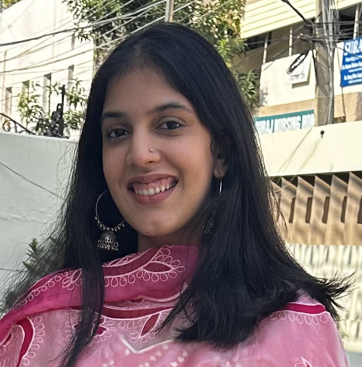

Raywa Singh

Summary
Motivated Bachelor of Engineering student majoring in Computer Science,
eager to thrive in a dynamic professional setting and seamlessly integrate into the US tech ecosystem.
Dedicated and passionate programmer with robust expertise in software development and big data technologies.
Proficient in various programming languages and technologies, aiming for a challenging full-time position that leverages and enhances
my skills while fostering teamwork.
Education
- Bachelors - Computer Science and Engineering - Thapar Institute of Engineering and Technology, India (2020-2024)
Internship
1. Techlive solutions- Junior Software Developer Intern (Jan-July 2024)
- Currently serving as a Junior Software Developer for a six-month term, assigned to a web development project with a focus on both front-end and back-end tasks.
- Employing technologies such as javascript, HTML, CSS, Flexbox, Bootstrap, Grid, jQuery, node.js, Express.js, React.js, API’s, Firebase, Authentication and Web-design
2. Miracle studios-Game developer Intern (June-July 2023)
- Spearheaded the initiation of a project involving the creation of diverse 3D objects and the implementation of player movement code within a collaborative team of three
- Applied LeetCode algorithms to optimise pathfinding and enhance player interactions within the game environment.
- Led subsequent project stages, refining player movement scripts with Unity's Input Manager, exploring C# variables, and introducing
dynamic moving platforms for enhanced player interaction.
- Contributed to ongoing level development by implementing a ground check mechanism and repurposing a waypoint follower script
to create strategic walking enemies. Integrated collectable coins, immersive sounds, and music while designing start and end screens with a canvas and buttons for user interaction in a two-scene structure.
Technical Skills
- Programming Languages: Java, Python, C++, C, C#
- Developer Tools : VS code, Android Studio, Unity
- Web Technologies:, HTML, CSS, JavaScript, XML, React JS
- Tools & Frameworks: Hadoop
- Cloud Computing Services: AWS EC2, AWS S3, MS Azure
- Database: MySQL, MongoDB
- Software Tools/Skills: GIT
- Operating Systems: Windows, Ubuntu (Linux OS), MacOS
- Algorithmic Problem-Solving: LeetCode
Volunteering
- Royal Bhangra School: Partner with this dance school every month to teach adult groups the cultural dance form “Bhangra”
- SEVA-Selfless Service: Provide meals & essentials to the homeless in Sacramento, CA.
- Vitalant Blood Donation: I attentively ensured post-donation care by providing nourishing snacks to donors and maintaining vigilant supervision to promptly address any potential fainting or adverse reactions in Folsom, California.
Other
My Hobbies
Contact Me